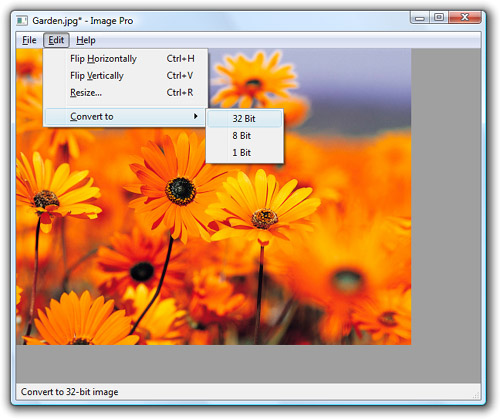

|
|
When a Qt application starts, only one thread is running—the main thread. This is the only thread that is allowed to create the QApplication or QCoreApplication object and call exec() on it. After the call to exec(), this thread is either waiting for an event or processing an event.
The main thread can start new threads by creating objects of a QThread subclass, as we did in the previous section. If these new threads need to communicate among themselves, they can use shared variables together with mutexes, read-write locks, semaphores, or wait conditions. But none of these techniques can be used to communicate with the main thread, since they would lock the event loop and freeze the user interface.
The solution for communicating from a secondary thread to the main thread is to use signal–slot connections across threads. Normally, the signals and slots mechanism operates synchronously, meaning that the slots connected to a signal are invoked immediately when the signal is emitted, using a direct function call.
However, when we connect objects that "live" in different threads, the mechanism becomes asynchronous. (This behavior can be changed through an optional fifth parameter to QObject::connect().) Behind the scenes, these connections are implemented by posting an event. The slot is then called by the event loop of the thread in which the receiver object exists. By default, a QObject exists in the thread in which it was created; this can be changed at any time by calling QObject::moveToThread().
To illustrate how signal–slot connections across threads work, we will review the code of the Image Pro application, a basic image processing application that allows the user to rotate, resize, and change the color depth of an image. The application (shown in Figure 14.3), uses one secondary thread to perform operations on images without locking the event loop. This makes a significant difference when processing very large images. The secondary thread has a list of tasks, or "transactions", to accomplish and sends events to the main window to report progress.
ImageWindow::ImageWindow()
{
imageLabel = new QLabel;
imageLabel->setBackgroundRole(QPalette::Dark);
imageLabel->setAutoFillBackground(true);
imageLabel->setAlignment(Qt::AlignLeft | Qt::AlignTop);
setCentralWidget(imageLabel);
createActions();
createMenus();
statusBar()->showMessage(tr("Ready"), 2000);
connect(&thread, SIGNAL(transactionStarted(const QString &)),
statusBar(), SLOT(showMessage(const QString &)));
connect(&thread, SIGNAL(allTransactionsDone()),
this, SLOT(allTransactionsDone()));
setCurrentFile("");
}

The interesting part of the ImageWindow constructor is the two signal–slot connections. Both of them involve signals emitted by the TransactionThread object, which we will cover in a moment.
void ImageWindow::flipHorizontally()
{
addTransaction(new FlipTransaction(Qt::Horizontal));
}
The flipHorizontally() slot creates a "flip" transaction and registers it using the private function addTransaction(). The flipVertically(), resizeImage(), convertTo32Bit(), convertTo8Bit(), and convertTo1Bit() functions are similar.
void ImageWindow::addTransaction(Transaction *transact)
{
thread.addTransaction(transact);
openAction->setEnabled(false);
saveAction->setEnabled(false);
saveAsAction->setEnabled(false);
}
The addTransaction() function adds a transaction to the secondary thread's transaction queue and disables the Open, Save, and Save As actions while transactions are being processed.
void ImageWindow::allTransactionsDone()
{
openAction->setEnabled(true);
saveAction->setEnabled(true);
saveAsAction->setEnabled(true);
imageLabel->setPixmap(QPixmap::fromImage(thread.image()));
setWindowModified(true);
statusBar()->showMessage(tr("Ready"), 2000);
}
The allTransactionsDone() slot is called when the TransactionThread's transaction queue becomes empty.
Now, let's turn to the TransactionThread class. Like most QThread subclasses, it is somewhat tricky to implement, because the run() function executes in its own thread, whereas the other functions (including the constructor and the destructor) are called from the main thread. The class definition follows:
class TransactionThread : public QThread
{
Q_OBJECT
public:
TransactionThread();
~TransactionThread();
void addTransaction(Transaction *transact);
void setImage(const QImage &image);
QImage image();
signals:
void transactionStarted(const QString &message);
void allTransactionsDone();
protected:
void run();
private:
QImage currentImage;
QQueue<Transaction *> transactions;
QWaitCondition transactionAdded;
QMutex mutex;
};
The TransactionThread class maintains a queue of transactions to process and executes them one after the other in the background. In the private section, we declare four member variables:
currentImage holds the image onto which the transactions are applied.
transactions is the queue of pending transactions.
transactionAdded is a wait condition that is used to wake up the thread when a new transaction has been added to the queue.
mutex is used to protect the currentImage and transactions member variables against concurrent access.
Here is the class's constructor:
TransactionThread::TransactionThread()
{
start();
}
In the constructor, we simply call QThread::start() to launch the thread that will execute the transactions.
TransactionThread::~TransactionThread()
{
{
QMutexLocker locker(&mutex);
while (!transactions.isEmpty())
delete transactions.dequeue();
transactions.enqueue(EndTransaction);
transactionAdded.wakeOne();
}
wait();
}
In the destructor, we empty the transaction queue and add a special EndTransaction marker to the queue. Then we wake up the thread and wait for it to finish using QThread::wait(), before the base class's destructor is implicitly invoked. Failing to call wait() would most probably result in a crash when the thread tries to access the class's member variables.
The QMutexLocker's destructor unlocks the mutex at the end of the inner block, just before the wait() call. It is important to unlock the mutex before calling wait(); otherwise, the program could end up in a deadlock situation, where the secondary thread waits forever for the mutex to be unlocked, and the main thread holds the mutex and waits for the secondary thread to finish before proceeding.
void TransactionThread::addTransaction(Transaction *transact)
{
QMutexLocker locker(&mutex);
transactions.enqueue(transact);
transactionAdded.wakeOne();
}
The addTransaction() function adds a transaction to the transaction queue and wakes up the transaction thread if it isn't already running. All accesses to the transactions member variable are protected by a mutex, because the main thread might modify them through addTransaction() at the same time as the secondary thread is iterating over transactions.
void TransactionThread::setImage(const QImage &image)
{
QMutexLocker locker(&mutex);
currentImage = image;
}
QImage TransactionThread::image()
{
QMutexLocker locker(&mutex);
return currentImage;
}
The setImage() and image() functions allow the main thread to set the image on which the transactions should be performed, and to retrieve the resulting image once all the transactions are done.
void TransactionThread::run()
{
Transaction *transact = 0;
QImage oldImage;
forever {
{
QMutexLocker locker(&mutex);
if (transactions.isEmpty())
transactionAdded.wait(&mutex);
transact = transactions.dequeue();
if (transact == EndTransaction)
break;
oldImage = currentImage;
}
emit transactionStarted(transact->message());
QImage newImage = transact->apply(oldImage);
delete transact;
{
QMutexLocker locker(&mutex);
currentImage = newImage;
if (transactions.isEmpty())
emit allTransactionsDone();
}
}
}
The run() function goes through the transaction queue and executes each transaction in turn by calling apply() on them, until it reaches the EndTransaction marker. If the transaction queue is empty, the thread waits on the "transaction added" condition.
Just before we execute a transaction, we emit the transactionStarted() signal with a message to display in the application's status bar. When all the transactions have finished processing, we emit the allTransactionsDone() signal.
class Transaction
{
public:
virtual ~Transaction() { }
virtual QImage apply(const QImage &image) = 0;
virtual QString message() = 0;
};
The Transaction class is an abstract base class for operations that the user can perform on an image. The virtual destructor is necessary because we need to delete instances of Transaction subclasses through a Transaction pointer. Transaction has three concrete subclasses: FlipTransaction, ResizeTransaction, and ConvertDepthTransaction. We will only review FlipTransaction; the other two classes are similar.
class FlipTransaction : public Transaction
{
public:
FlipTransaction(Qt::Orientation orientation);
QImage apply(const QImage &image);
QString message();
private:
Qt::Orientation orientation;
};
The FlipTransaction constructor takes one parameter that specifies the orientation of the flip (horizontal or vertical).
QImage FlipTransaction::apply(const QImage &image)
{
return image.mirrored(orientation == Qt::Horizontal,
orientation == Qt::Vertical);
}
The apply() function calls QImage::mirrored() on the QImage it receives as a parameter and returns the resulting QImage.
QString FlipTransaction::message()
{
if (orientation == Qt::Horizontal) {
return QObject::tr("Flipping image horizontally...");
} else {
return QObject::tr("Flipping image vertically...");
}
}
The message() function returns the message to display in the status bar while the operation is in progress. This function is called in TransactionThread::run() when emitting the transactionStarted() signal.
The Image Pro application shows how Qt's signals and slots mechanism makes it easy to communicate with the main thread from a secondary thread. Implementing the secondary thread is trickier, because we must protect our member variables using a mutex, and we must put the thread to sleep and wake it up appropriately using a wait condition. The two-part Qt Quarterly article series "Monitors and Wait Conditions in Qt", available online at http://doc.trolltech.com/qq/qq21-monitors.html and http://doc.trolltech.com/qq/qq22-monitors2.html, presents some more ideas on how to develop and test QThread subclasses that use mutexes and wait conditions for synchronization.
|
|
| Converted from CHM to HTML with chm2web Pro 2.85 (unicode) |